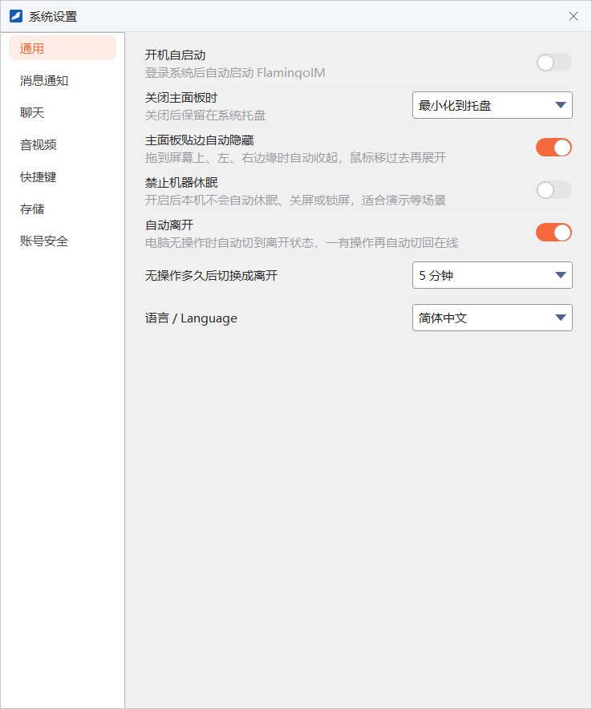
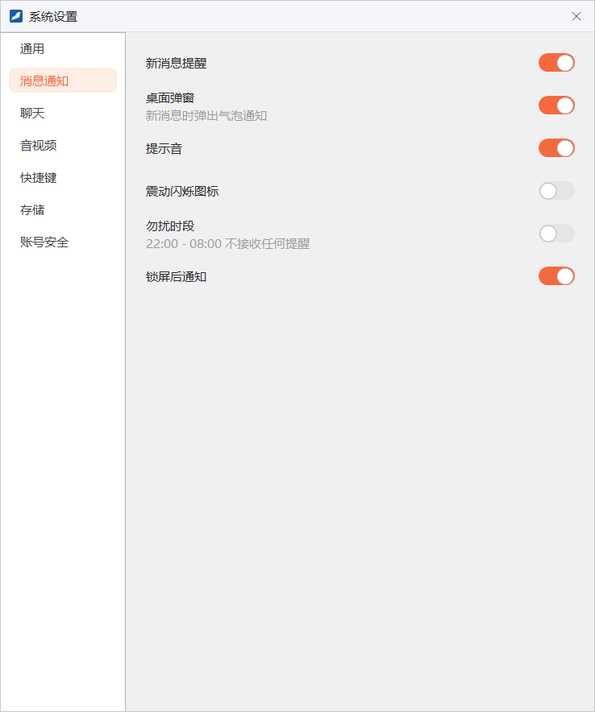
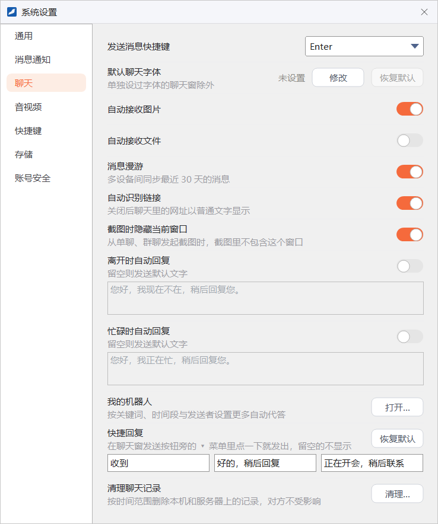
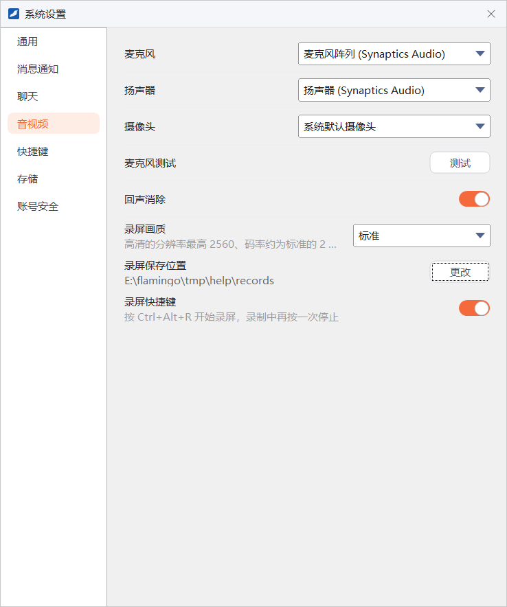
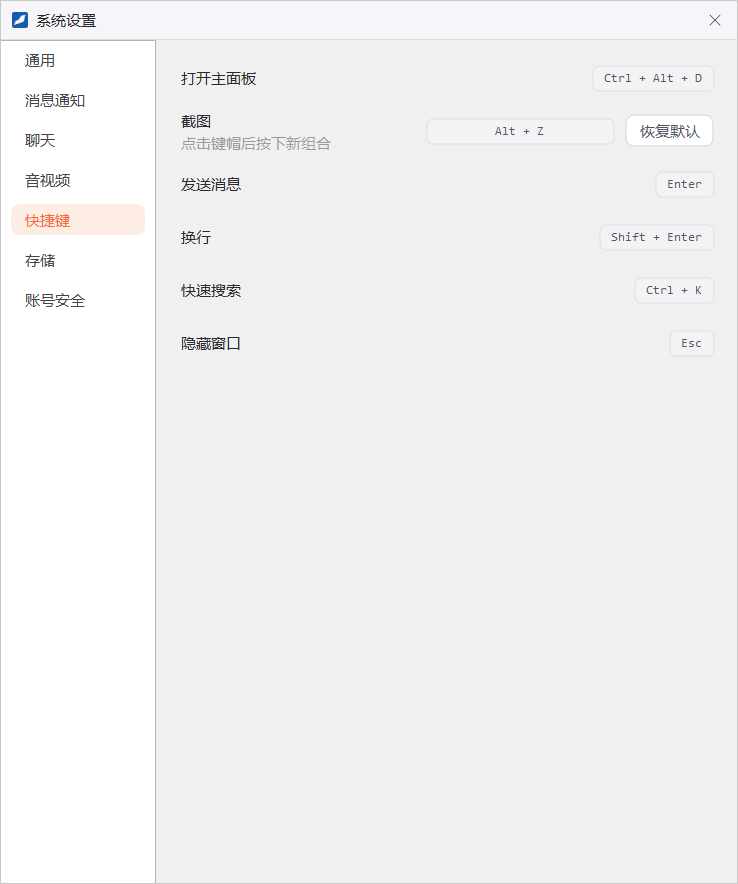
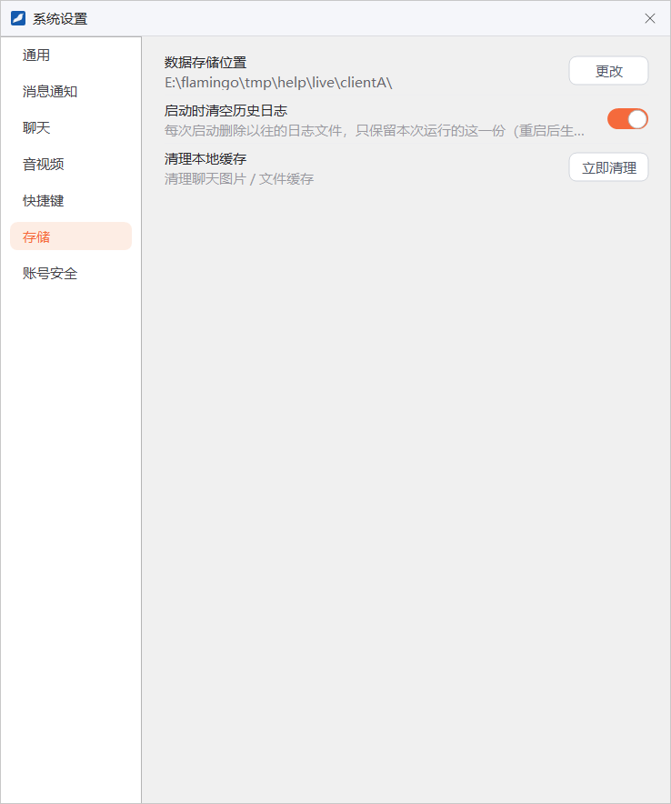
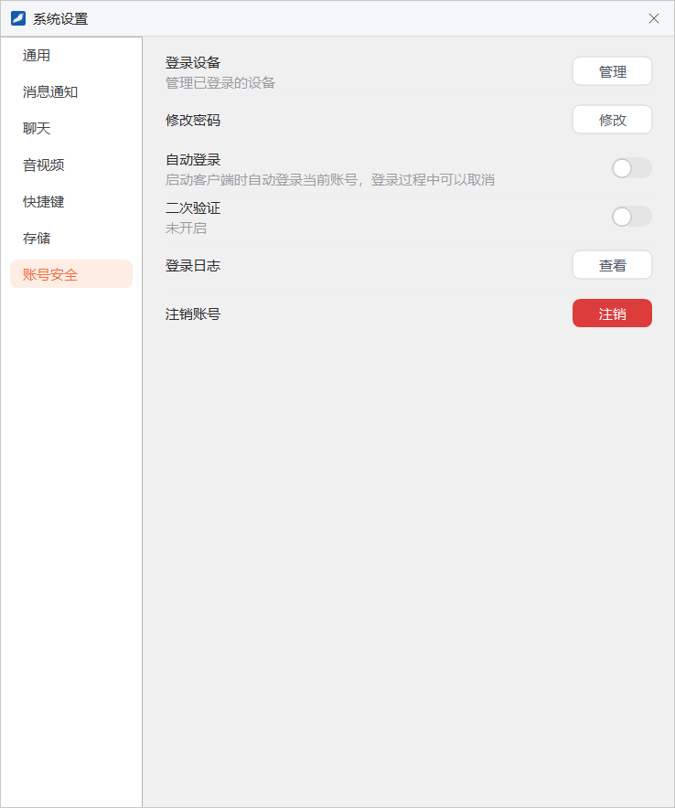

系统设置
系统设置集中了客户端的各项偏好：开机启动、关闭方式、提示音、发送快捷键、自动回复、录屏、截图快捷键、数据存储位置等。本章按页面逐项说明。
- 适用：全体员工
- 需要：已登录
- 设置按账号保存（截图相关的两项为本机所有账号共用）
打开系统设置
点主面板左下角的 ≡，在系统菜单的「设置」组中选 系统设置。窗口左侧是七个页面：通用、消息通知、聊天、音视频、快捷键、存储、账号安全，点击即可切换。
系统设置没有「保存」按钮，每一项改动后立即生效并保存，直接关闭窗口即可。
关于「暂未生效」与「暂未开放」当前版本中有少数设置项还没有实际效果。本章把可以设置、也会被保存，但客户端暂时还不会按它改变行为的项目标为「暂未生效」；把点击后只提示功能正在开发中的按钮标为「暂未开放」。设置页上这些项目的说明文字也写明了当前的实际情况。
通用

| 设置项 | 说明 |
|---|---|
| 开机自启动 | 登录 Windows 后自动启动 FlamingoIM。 |
| 关闭主面板时 | 点主面板右上角 × 时的处理方式：最小化到托盘（程序留在托盘里继续运行）或 退出程序。关闭时弹出的「关闭 FlamingoIM」对话框默认选中这里的方式；在对话框里勾选过「记住我的选择」后，点 × 直接按这里的方式处理。见「认识主面板」。 |
| 主面板贴边自动隐藏 | 把主面板拖到屏幕上、左、右边缘时自动收起，鼠标移过去再展开。 |
| 禁止机器休眠 | 开启后本机不会自动休眠、关屏或锁屏，适合演示等场景。开启期间下面的「自动离开」不生效，这两行变为灰色。 |
| 自动离开 | 电脑一段时间没有操作时，自动把你的状态切到「离开」，一有操作再自动切回「在线」。 |
| 无操作多久后切换成离开 | 自动离开的等待时间：5 分钟、10 分钟、15 分钟或 30 分钟，默认 5 分钟。 |
| 语言 / Language | 界面语言，可选「跟随系统」、简体中文以及语言包中的其他语言。选择后客户端询问是否立即重启，重启后生效。程序目录里没有语言包 FlamingoLang.dll 时不显示这一行。 |
消息通知

| 设置项 | 说明 |
|---|---|
| 新消息提醒 | 暂未生效。新消息怎样提醒由各会话的「消息提醒方式」决定，在会话的右键菜单里设置，见「消息提醒设置」。 |
| 桌面弹窗 | 暂未生效，目前没有新消息弹窗。 |
| 提示音 | 关闭后，新消息等提示音不再播放。与托盘菜单的「关闭所有声音」是同一个开关，在任意一处修改，另一处随之改变。 |
| 震动闪烁图标 | 暂未生效。托盘图标按各会话的提醒方式闪烁。 |
| 勿扰时段 | 开启后，每天 22:00 到次日 08:00 之间不弹出文件共享的右下角通知。目前只对文件共享的通知有效，新消息的提示音和托盘闪烁不受它影响；不想被新消息打扰时，可以把会话的提醒方式改为「接收消息但不提醒」等，见「消息提醒设置」。 |
| 锁屏后通知 | 暂未生效。客户端锁屏期间不响提示音、不弹窗，托盘图标照常闪烁，见「锁屏」。 |
想按会话控制提醒（例如某个群只在 @ 你时提醒），请使用会话的「消息提醒设置」，见「会话列表与消息提醒」。
聊天

| 设置项 | 说明 |
|---|---|
| 发送消息快捷键 | 选 Enter 时按 Enter 发送、Ctrl+Enter 换行；选 Ctrl+Enter 时按 Ctrl+Enter 发送、Enter 换行。与聊天窗口发送按钮旁 ▾ 菜单中的设置是同一份。 |
| 默认聊天字体 | 点 修改 选择你发出消息的默认字体，点 恢复默认 取消。没有设置时显示「未设置」。单独设过字体的聊天窗口仍使用它自己的字体。 |
| 自动接收图片 | 暂未生效。聊天里的图片总是自动下载。 |
| 自动接收文件 | 暂未生效。单聊里收到的文件要点 接收 后才下载，见「图片、文件与文件夹」。 |
| 消息漫游 | 暂未生效。聊天记录始终保存在服务器上，在哪台电脑上登录都能查看。 |
| 自动识别链接 | 开启时聊天里的网址显示为可点击的链接；关闭后以普通文字显示。已打开的聊天窗口立即随之变化。 |
| 截图时隐藏当前窗口 | 从单聊、群聊窗口发起截图时，截图里不包含这个聊天窗口。与聊天窗口截图按钮旁 ▾ 菜单中的勾选项是同一个设置，本机所有账号共用。 |
| 离开时自动回复 忙碌时自动回复 | 开启后，你处于「离开」或「忙碌」状态时，同事在单聊里给你发消息，会自动收到下方输入框里的这段文字（最多 100 个字）。输入框留空时发送默认文字，即框里灰色显示的「您好，我现在不在，稍后回复您。」或「您好，我正在忙，稍后回复您。」。群聊里不自动回复；你正看着与对方的聊天窗口时也不回复。 |
| 我的机器人 | 点 打开… 打开「我的机器人」窗口，按关键词、时间段与发送者设置更多自动代答，见「机器人」。机器人模块不可用或企业没有允许使用个人机器人时，不显示这一行。 |
| 快捷回复 | 三条常用回复，默认是「收到」「好的，稍后回复」「正在开会，稍后联系」。在聊天窗口发送按钮旁的 ▾ 菜单里点一条就直接发出，留空的不显示。点 恢复默认 把三条都换回默认文字。 |
| 清理聊天记录 | 按时间范围删除聊天记录，见下文。 |
按时间范围清理聊天记录
想一次删除某段时间的全部聊天记录时，点「清理聊天记录」一行的 清理…：
- 在弹出的「清理聊天记录」对话框里选择 时间范围：全部、最近 1 天、最近 7 天、最近 30 天、7 天以前、30 天以前、3 个月以前、半年以前、1 年以前，或自定义。
- 选「自定义」时，再分别选择 开始 和 结束 的年、月、日。开始时间不能晚于结束时间，结束时间不能晚于当前时间。
- 点 清理，确认框里会说明将删除的时间范围，确认后开始清理。完成后提示「已清理……的聊天记录」。
清理后无法恢复清理会删除这个时间范围内你的全部单聊和群聊记录，本机与服务器上的记录同时删除，删除后无法恢复；对方和其他群成员的记录不受影响。清理需要连接服务器，未连接时会提示「未连接服务器，连接后才能清理」。只想清空某一个会话时，请在会话的右键菜单里选「清空聊天记录」，见「会话右键菜单」。
音视频

| 设置项 | 说明 |
|---|---|
| 麦克风 / 扬声器 / 摄像头 | 下拉框列出本机的设备。暂未生效：目前通话时麦克风和扬声器使用 Windows 的默认设备，摄像头使用系统找到的第一个摄像头。需要换麦克风或扬声器时，请在 Windows 的声音设置里修改默认设备。 |
| 麦克风测试 | 暂未开放，点 测试 会提示功能开发中。 |
| 回声消除 | 暂未生效。一对一通话时回声消除始终开启。 |
| 录屏画质 | 标准 或 高清。高清的分辨率最高 2560、码率约为标准的 2 倍，画面更清晰，文件也更大。从下一次录制开始生效。 |
| 录屏保存位置 | 录像文件存放的文件夹，默认是「视频」文件夹下的 FlamingoRecords。点 更改 选择其他文件夹。 |
| 录屏快捷键 | 开启后，在任何程序里按 Ctrl+Alt+R 开始录屏，录制中再按一次停止。录屏的用法见「屏幕录制」。 |
快捷键

这一页列出客户端的快捷键，其中只有「截图」可以修改：
| 功能 | 按键 | 说明 |
|---|---|---|
| 打开主面板 | Ctrl+Alt+D | 在任何程序里都可以按：主面板可见时隐藏它，不可见时调到前台 |
| 截图 | 默认 Alt+Z | 可以修改，见下文；截图的用法见「截图与图片文字识别」 |
| 发送消息 | Enter | 随「聊天」页的「发送消息快捷键」变化：选 Ctrl+Enter 发送时，这里分别显示 Ctrl + Enter 和 Enter |
| 换行 | Ctrl+Enter | |
| 快速搜索 | Ctrl+K | 主面板在前台时，把光标移到主面板的搜索框，见「搜索」 |
修改截图快捷键
- 点「截图」一行显示按键的框（键帽），提示变为「按 Esc 取消，Backspace 停用」。
- 按下新的组合键。组合里必须包含 Ctrl 或 Alt，主键须为字母、数字或 F1~F12，也不能与 FlamingoIM 自己的其他快捷键重复。
- 按键合规时立即保存生效，托盘菜单里「截图」后面括号中的按键也随之更新（停用后只显示「截图」）。
- 录入时按 Esc 取消修改；按 Backspace 停用截图快捷键，此时提示「已停用，点击键帽可重新设置」。
- 新组合已被其他程序占用时，会提示「…已被其他程序占用，请换一个组合」。
- 点 恢复默认 恢复为 Alt+Z。
- 截图快捷键为本机所有账号共用，登录之前也可以使用。
存储

| 设置项 | 说明 |
|---|---|
| 数据存储位置 | 本机保存聊天记录、缓存和账号设置的文件夹。点 更改 可以换到其他位置，重启客户端后生效，见下方提示。 |
| 启动时清空历史日志 | 开启后，每次启动客户端时删除以往的日志文件，只保留本次运行的这一份。重启后生效。 |
| 清理本地缓存 | 点 立即清理 打开「清理本地缓存」对话框，列出聊天文件、聊天图片、头像缓存各占多少空间；勾选要清理的项目后点 开始清理。清理后这些内容需要时会重新下载，聊天记录、公告与本地设置不受影响。 |
更改数据存储位置前请先看清提示更改后客户端从新位置读写数据，而新位置是空的：聊天记录、公告和本地设置都会从头开始。原有数据仍保留在原位置下的
Users\账号\ 文件夹里，但不再被使用。如果要保留原有数据，请先退出客户端，把这个文件夹整个复制到新位置下的 Users\ 文件夹中，再启动客户端。确认框里会写明这两个文件夹的完整路径。账号安全

| 设置项 | 说明 |
|---|---|
| 登录设备 | 暂未开放。 |
| 修改密码 | 点 修改 打开修改密码对话框，与系统菜单中的「修改密码」相同，见「个人资料与账号」。 |
| 自动登录 | 开启后，启动客户端时自动登录当前账号，登录过程中可以取消。与登录窗口里的「自动登录」是同一个设置。 |
| 二次验证 | 暂未开放。 |
| 登录日志 | 暂未开放。 |
| 注销账号 | 暂未开放。 |